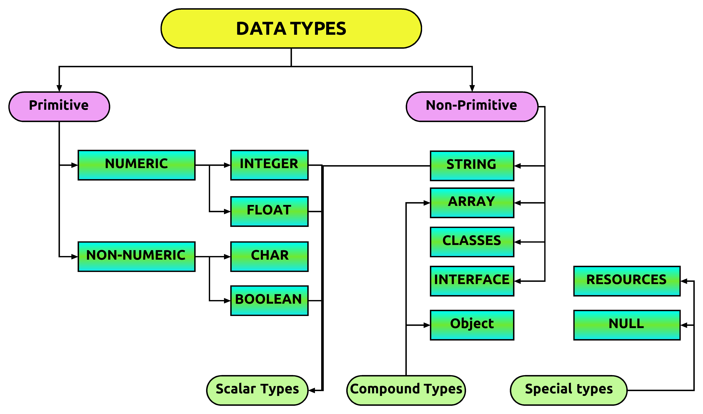

Markup
HTML markup consists of several key components, including those called tags (and their attributes), character-based data types, character references and entity references. HTML tags most commonly come in pairs like h1 and h1, although some represent empty elements and so are unpaired, for example img. The first tag in such a pair is the start tag, and the second is the end tag (they are also called opening tags and closing tags).

Elements
HTML documents imply a structure of nested HTML elements. These are indicated in the document by HTML tags, enclosed in angle brackets thus:
.[better source needed] In the simple, general case, the extent of an element is indicated by a pair of tags: a "start tag"
and "end tag"
. The text content of the element, if any, is placed between these tags. Tags may also enclose further tag markup between the start and end, including a mixture of tags and text. This indicates further (nested) elements, as children of the parent element. The start tag may also include the element's attributes within the tag. These indicate other information, such as identifiers for sections within the document, identifiers used to bind style information to the presentation of the document, and for some tags such as the img used to embed images, the reference to the image resource in the format like this: img src="example.com/example.jpg" Some elements, such as the line breakdo not permit any embedded content, either text or further tags. These require only a single empty tag (akin to a start tag) and do not use an end tag. Many tags, particularly the closing end tag for the very commonly used paragraph element
, are optional. An HTML browser or other agent can infer the closure for the end of an element from the context and the structural rules defined by the HTML standard. These rules are complex and not widely understood by most HTML authors. The general form of an HTML element is therefore: tag attribute1="value1" attribute2="value2"''content''/tag. Some HTML elements are defined as empty elements and take the form tag attribute1="value1" attribute2="value2". Empty elements may enclose no content, for instance, the br / tag or the inline img tag. The name of an HTML element is the name used in the tags. The end tag's name is preceded by a slash character, /, and that in empty elements the end tag is neither required nor allowed. If attributes are not mentioned, default values are used in each case.

Data types
HTML defines several data types for element content, such as script data and stylesheet data, and a plethora of types for attribute values, including IDs, names, URIs, numbers, units of length, languages, media descriptors, colors, character encodings, dates and times, and so on. All of these data types are specializations of character data. Document type declaration HTML documents are required to start with a Document type declaration (informally, a "doctype"). In browsers, the doctype helps to define the rendering mode—particularly whether to use quirks mode. The original purpose of the doctype was to enable the parsing and validation of HTML documents by SGML tools based on the Document type definition (DTD). The DTD to which the DOCTYPE refers contains a machine-readable grammar specifying the permitted and prohibited content for a document conforming to such a DTD. Browsers, on the other hand, do not implement HTML as an application of SGML and as consequence do not read the DTD.
Semantic HTML
Semantic HTML is a way of writing HTML that emphasizes the meaning of the encoded information over its presentation (look). HTML has included semantic markup from its inception, but has also included presentational markup, such as font, i and center tags. There are also the semantically neutral div and span tags. Since the late 1990s, when Cascading Style Sheets were beginning to work in most browsers, web authors have been encouraged to avoid the use of presentational HTML markup with a view to the separation of content and presentation. In a 2001 discussion of the Semantic Web, Tim Berners-Lee and others gave examples of ways in which intelligent software "agents" may one day automatically crawl the web and find, filter, and correlate previously unrelated, published facts for the benefit of human users. Such agents are not commonplace even now, but some of the ideas of Web 2.0, mashups and price comparison websites may be coming close. The main difference between these web application hybrids and Berners-Lee's semantic agents lies in the fact that the current aggregation and hybridization of information is usually designed by web developers, who already know the web locations and the API semantics of the specific data they wish to mash, compare and combine. An important type of web agent that does crawl and read web pages automatically, without prior knowledge of what it might find, is the web crawler or search-engine spider. These software agents are dependent on the semantic clarity of web pages they find as they use various techniques and algorithms to read and index millions of web pages a day and provide web users with search facilities without which the World Wide Web's usefulness would be greatly reduced. In order for search engine spiders to be able to rate the significance of pieces of text they find in HTML documents, and also for those creating mashups and other hybrids as well as for more automated agents as they are developed, the semantic structures that exist in HTML need to be widely and uniformly applied to bring out the meaning of the published text. Presentational markup tags are deprecated in current HTML and XHTML recommendations. The majority of presentational features from previous versions of HTML are no longer allowed as they lead to poorer accessibility, higher cost of site maintenance, and larger document sizes. Good semantic HTML also improves the accessibility of web documents (see also Web Content Accessibility Guidelines). For example, when a screen reader or audio browser can correctly ascertain the structure of a document, it will not waste the visually impaired user's time by reading out repeated or irrelevant information when it has been marked up correctly.